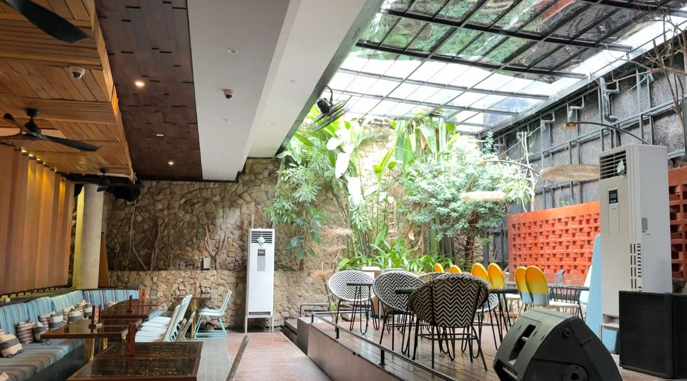
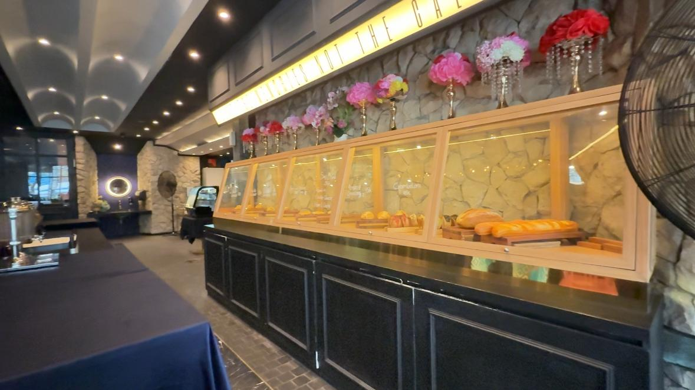
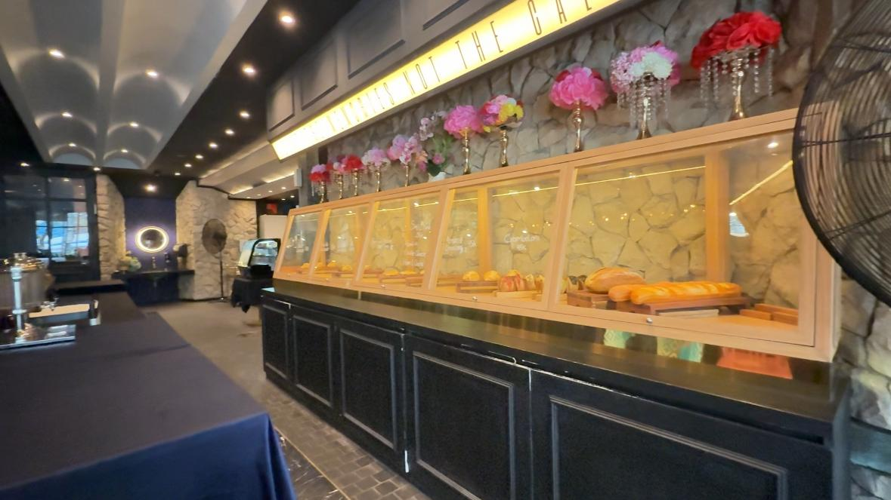
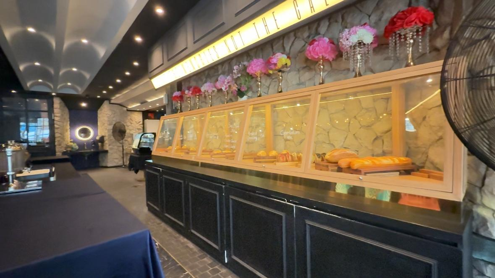
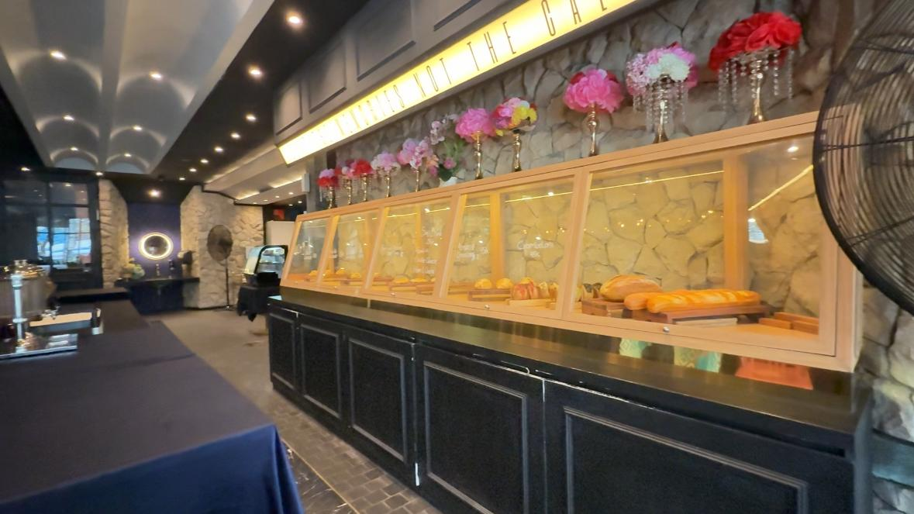

Dokumentasi Restoran
Berikut adalah beberapa dokumentasi visual suasana dan menu di Saigon Bistro yang diambil langsung menggunakan kamera HP.

 


Berikut adalah beberapa dokumentasi visual suasana dan menu di Saigon Bistro yang diambil langsung menggunakan kamera HP.
